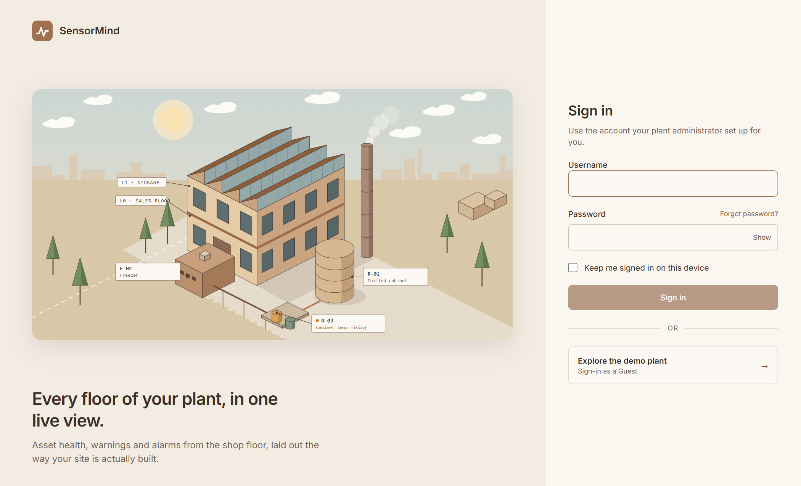
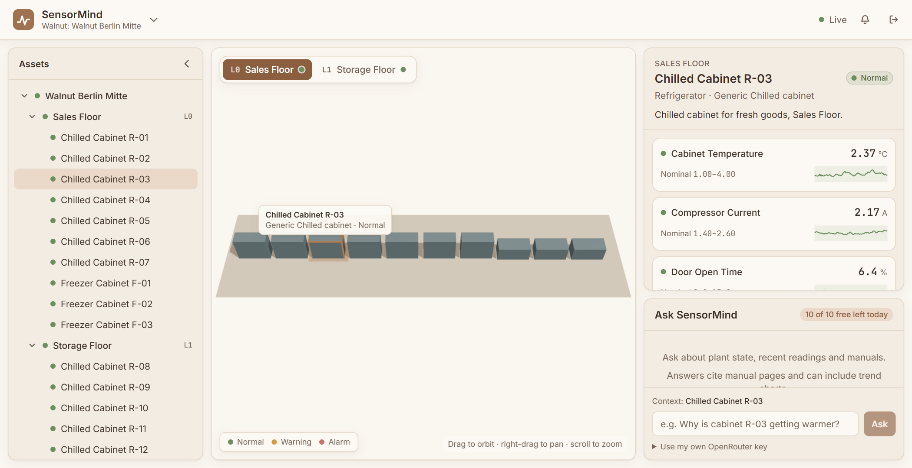
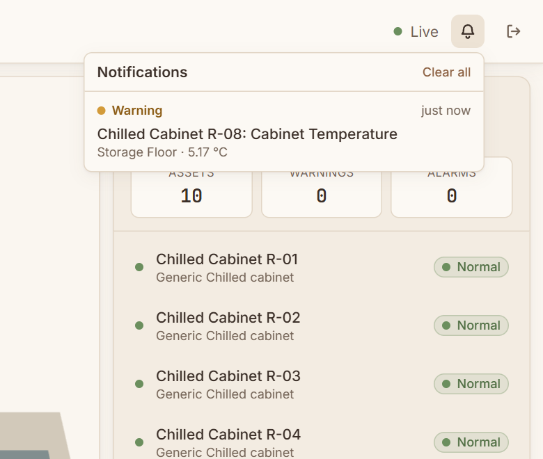
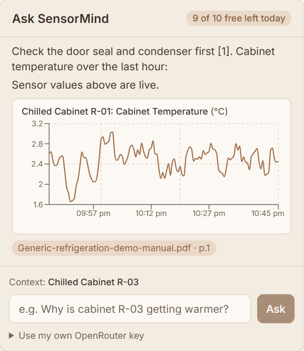

(a)Abstract: SensorMind is a web application that presents the assets of an industrial plant as a navigable three-dimensional model and attaches live sensor values, alarm states and an assistant to it. The plant is described by a validated JSON document organised as site, floor, asset and tag, and is stored per tenant in PostgreSQL. A seeded stochastic simulator supplies the sensor data over Server-Sent Events. A retrieval-augmented assistant answers questions from manuals held in a vector store and from current readings, cites the manual pages it uses, and can draw trend graphs. This paper describes the design and implementation. The system was exercised on one sample plant. The assistant was tested only against a local stand-in for the language-model service, and no accuracy or performance measurements were taken.
An operator who wants to know what is wrong with a machine usually has to consult several tools. Sensor values sit in a historian or a supervisory display, drawings in a document store, and manuals in PDF files that few people open under time pressure. SensorMind brings these into one browser view. Assets are drawn in a three-dimensional model arranged by floor. Selecting an asset shows its tags with current value, status and recent trend. A chat panel answers questions from the manuals and the live readings.
The contributions of this work are the following.
The system has three tiers (Figure 1). A single-page application written in React and TypeScript renders the interface. An ASP.NET Core 8 service holds the domain logic, persistence and HTTP endpoints; it is split into three projects, Core, Infrastructure and Api. Three external services are used: PostgreSQL for tenants, sites and accounts, Qdrant for manual embeddings, and OpenRouter for embeddings and chat completions.
The Core project has no input or output dependencies. It contains the plant model, the configuration parser, the status rules and the simulator. Infrastructure implements storage and the clients of external services, and Api maps endpoints. Live readings reach the browser as Server-Sent Events (SSE), because the traffic runs in one direction and the browser reconnects without extra code. History is fetched over REST.
The plant is described as a tree with four levels (Figure 2). A site is the plant as a whole. A floor is one level of the building and has its own three-dimensional view. An asset is a machine that is monitored, such as a refrigerated cabinet; it is the unit that a user selects and asks the assistant about. A tag is one sensor signal of an asset, for example a cabinet temperature, with its unit and its nominal and alarm limits. Assets sit directly under a floor, with no grouping between the two.
An asset has a type, manufacturer, model and a placement (position, size, rotation and shape hint) used by the three-dimensional view. A tag has a unit, a nominal band and optional lower and upper alarm limits. A tag is in alarm when its value reaches an alarm limit, in warning when it lies outside the nominal band, and normal otherwise. The interface rolls statuses up, so an asset or a floor shows the worst status below it.
The parser reads the JSON into nullable document classes and then builds immutable domain records. A missing field therefore becomes an error with a JSON path instead of an exception, and all errors are collected in one pass. Unknown properties are errors. Identifiers are lowercase kebab-case and unique, and the rotated footprint of each asset must lie inside its floor. The sample file describes one site with two floors, 20 assets (refrigerated cabinets) and 60 tags. The sample plant is a fictional supermarket, and it and its demo manual were written for this project.
Each tag is simulated as an Ornstein–Uhlenbeck process, a mean-reverting random walk, around the centre of its nominal band. The time constant of the reversion is 90 s, and the noise is scaled so that the stationary standard deviation is 0.18 of the half-width of the band. Three kinds of Poisson-distributed event are added per tag: slow drifts (0.4 per hour), whose triangular offset peaks at 1.2 half-widths and can therefore leave the nominal band; single-sample spikes (0.6 per hour); and short excursions beyond an alarm limit (one in twelve per hour). A sample is produced every two seconds, and a fixed seed makes a run repeatable. These rates are defaults of the simulation profile, chosen so that events are visible in a demonstration; they were not fitted to plant data.
Twenty-four hours of history are generated at start-up so that charts are populated at once. Readings are kept in a fixed-size ring buffer per tag behind an interface, ISensorStore, which a historian could implement. History requests are reduced to the requested number of points by averaging buckets of equal sample count.
The assistant draws on two sources that answer different kinds of questions. The live sensor data (current value, status and recent trend of the tags) answers what is happening. The manuals, retrieved from the vector store, answer why it is happening and what to do: causes, procedures and limits, as in “Why is a refrigerated cabinet getting warmer?”. Sensor data alone suffices for questions about the current state, whereas questions about causes or procedures need the manuals. Without manuals the assistant still answers state and trend questions from the sensor data, and states when the context is insufficient for the rest.
The pipeline follows the retrieve-then-generate pattern (Figure 3). Ingestion runs at start-up. Each PDF in the manuals folder is hashed with SHA-256, and a file whose hash is already stored in Qdrant is skipped. Otherwise the text is extracted page by page with PdfPig and split into chunks of about 450 words (roughly 600 tokens) with an overlap of 60 words. A chunk never crosses a page boundary, so each has one page number. Chunks are embedded in batches of 32, by default with text-embedding-3-small (1536 dimensions), and stored with cosine distance. The payload holds the text, source file, page and document hash, and, when the file name contains a manufacturer or model that occurs in the plant, those two fields. A scanned document without a text layer is skipped with a warning; no character recognition is attempted.
At query time the question is embedded and the five nearest chunks are retrieved. If an asset is selected, the search is restricted to its manufacturer; when that returns nothing, it is repeated without a filter. The prompt holds fixed rules, the identifier, name and unit of every tag, and the numbered excerpts. For the selected asset, for assets named in the question or, failing both, for assets in warning or alarm, it also lists each tag’s current value, status, nominal band and a 15-minute trend summary (direction, minimum, maximum and mean). The rules require the model to answer only from this context, to cite excerpts by number, to say when only sensor data was used, and to state when the context is insufficient. The last six turns of the conversation are added.
The answer is streamed as SSE events. When the stream ends, the service reads the cited numbers and sends the matching file and page as citations. If the text contains a fenced block of the form {“tagId”: …, “minutes”: …}, the service checks the tag identifier against the plant, reads the sensor store for the window (5 to 240 minutes, at most 120 points) and sends the series as a chart event. The interface hides the block and draws the graph. If the vector store or the embedding call fails, the answer is produced from sensor data alone.
A tenant is stored as one document, {tenant, sites[]}, with its sites in a PostgreSQL table reached through Entity Framework Core repositories whose interfaces are defined in Core, and a save replaces the tenant and its sites in one transaction. Site and tag identifiers must be unique across tenants, because the sensor store is keyed by tag identifier. Accounts are rows of a users table that hold a salted hash from the ASP.NET Core password hasher. A successful login returns a JSON Web Token valid for eight hours. The browser keeps it in local storage if the user asks to stay signed in, and in session storage otherwise. Endpoints require a valid token by default, and tenant management also requires the admin role. The only account created automatically is a guest account without that role. A browser EventSource cannot set headers, so the live stream accepts the token as a query parameter. Accounts are not bound to a tenant: any signed-in user can read every tenant.
The backend uses API controllers grouped by concern. The OpenRouter key and address, the model names, the Qdrant address and key, the manuals folder and the chat limit are configuration values, and none is stored in the repository. The chat endpoint accepts ten questions per client address and UTC day with the server key; the count is kept in memory and is lost at restart. A request that carries its own key in a header is exempt, and that key is used for that request only. With neither a server key nor a request key, the endpoint answers 503 with an explanatory message, which the interface displays.
The frontend uses React 19, Vite, Three.js through react-three-fiber, Recharts, Tailwind CSS and react-markdown. Live readings are held in a store outside React and read with useSyncExternalStore, so a component re-renders only for the tags it shows. An asset is drawn as a primitive from its placement data and tinted by status.
Notifications are derived on the client from the same stream. A tag raises one when it first reports warning or alarm, which covers assets already in that state at load, and again when it changes from one to the other. A return to normal raises none. At most 50 are kept, in memory, and selecting an item selects that asset in the tree.
This section shows the running application and lists the checks made; it reports no measurements. The screenshots come from throwaway instances on temporary ports. Figure 4 shows the main view with one asset selected, Figure 5(a) the sign-in page, Figure 5(b) the notification list, and Figure 5(c) the chat panel.

The checks in Table 1 were run by hand against the throwaway instances; the repository contains no automated test suite. Every chat check used a small local server that implements the OpenAI-compatible embedding and streaming endpoints and returns a fixed reply. Retrieval quality, answer quality, latency and cost with a real model were therefore not examined, and OpenRouter itself was never called. The manual used was a fictional six-page demo document written for the project; it was ingested against the stand-in embedding server into a throwaway Qdrant instance, which gave six chunks, one per page.

(a)
(b)
(c)| Check | Setup | Outcome |
|---|---|---|
| Ingestion | Fictional six-page demo PDF, stand-in embedding server | Six chunks stored with their page numbers and the manufacturer field; a second start skipped the file by its hash |
| Ingestion failures | No key; Qdrant stopped; empty folder | A warning was logged each time and the API started |
| Chat stream | Stand-in model server | Token, citation, chart and completion events received; chart block hidden |
| Rate limit and keys | Eleven requests from one address; no server key and no request key | Ten accepted, the eleventh refused with status 429; a request with its own key was then accepted; without any key, status 503 with an explanatory message |
| Notifications | Running simulator, headless browser | A warning raised by the simulator appeared in the list with its floor and value |
| Authentication | Guest, wrong password, unknown user, restart | Guest accepted; the others refused with 401; no duplicate guest row |
All sensor data are simulated, and the sensor store is in memory, so history is lost at restart. The chat has not been evaluated for answer quality, and the real OpenRouter service has not been called. The manufacturer filter relies on file names, and a model filter was not used because most file names do not carry the full model. A document that fails part-way through ingestion is not retried, since its hash is already stored for the chunks that were written. The chart mechanism depends on the model following the fenced-block instruction; a block that fails validation is ignored.
The rate limit uses the connection address. Behind a reverse proxy this is the proxy’s address until forwarded headers are configured, and these were left out because trusting them would let clients forge the address. Accounts are not tenant-scoped, there is no password change or reset, and no administrator is created automatically, so tenant management needs an account added to the database by hand. Notifications exist only in the browser, are lost on reload and cannot be acknowledged.
Future work includes connectors for real plant data, an evaluation of answers against real manuals with measured retrieval quality, tenant-scoped accounts, and persisted, acknowledgeable alarms.
SensorMind couples a validated plant model, a simulated sensor stream and a retrieval-augmented assistant in one multi-tenant web application. Storage, the model client and the vector store sit behind small interfaces, and the application runs without a key, a vector store or manuals. As a prototype it is complete, but the assistant is untested against a real model and the data are simulated, so its usefulness on a real plant remains open.